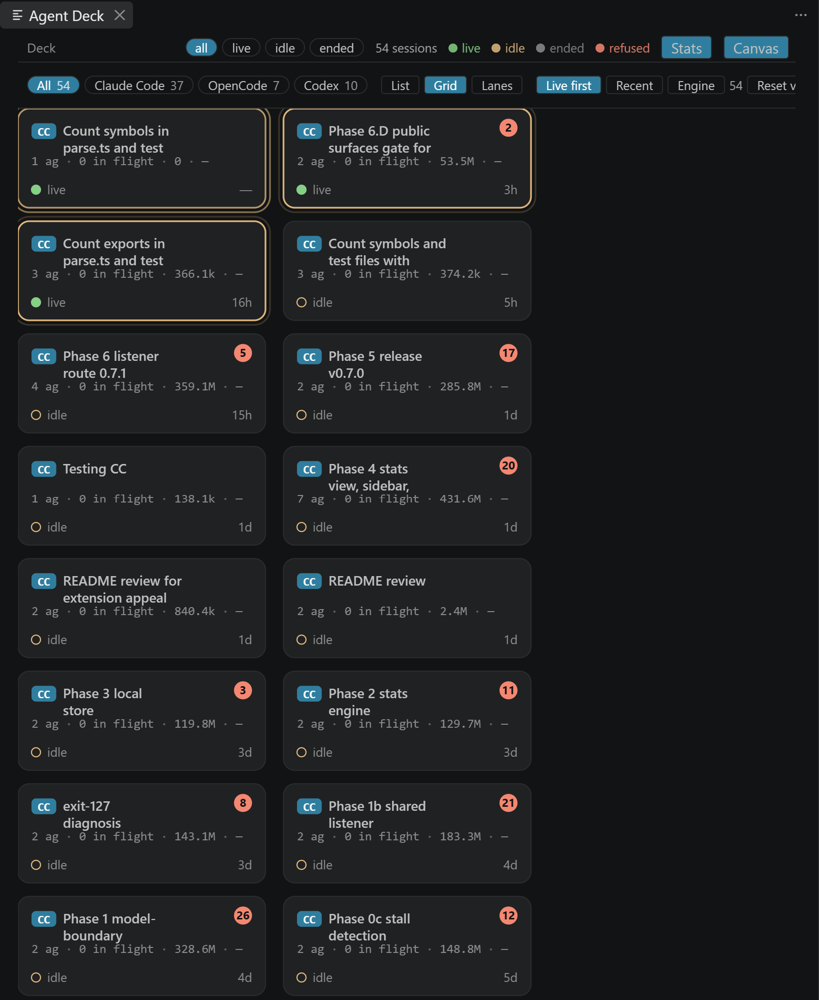
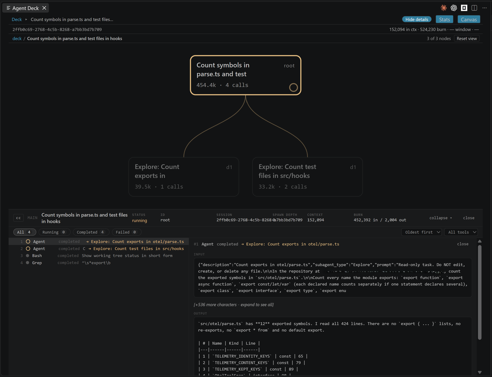
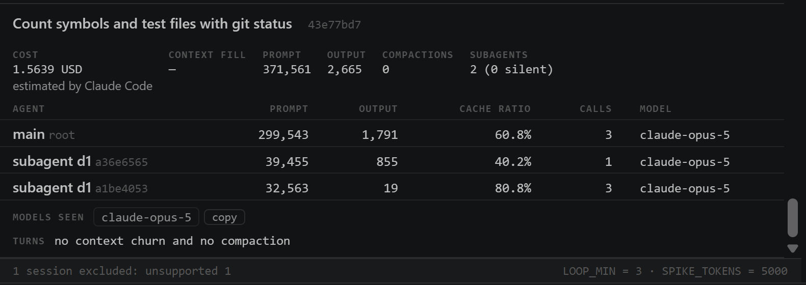
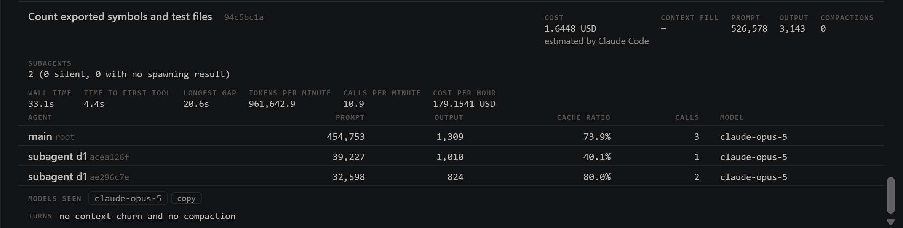
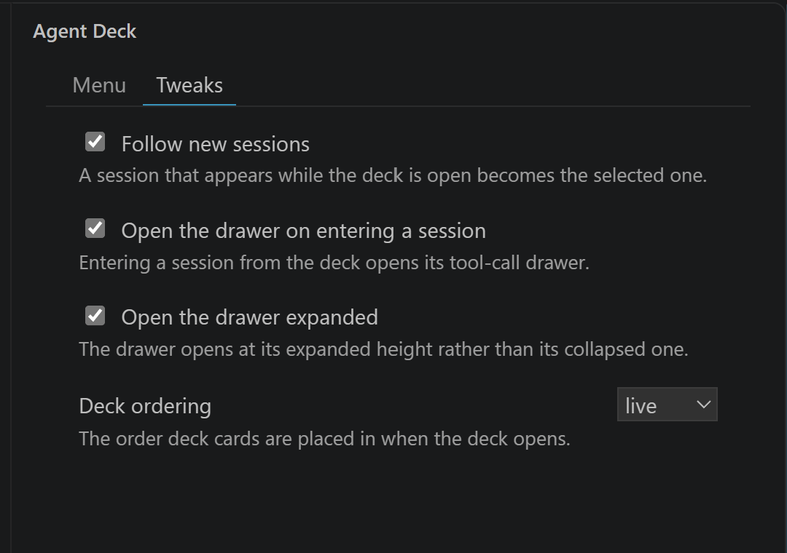
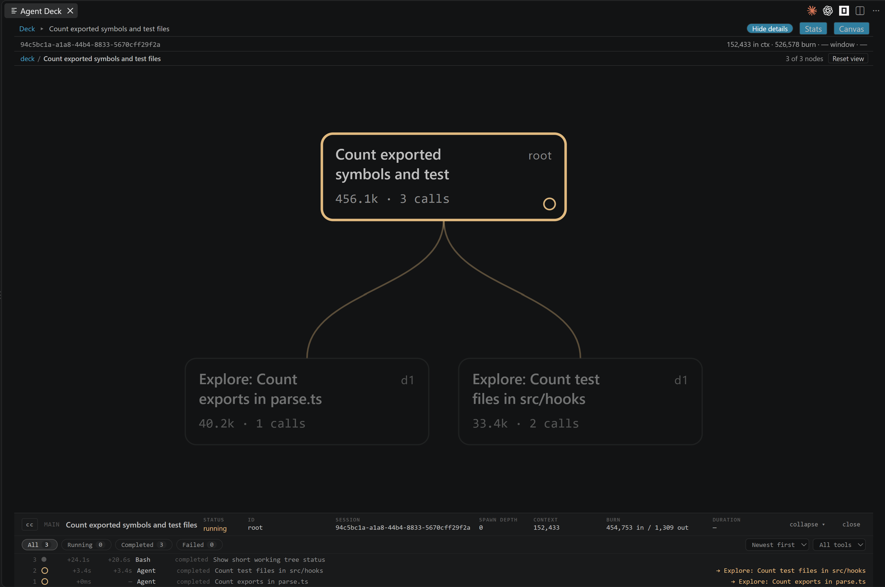

Agent Deck turns a scrolling swarm of coding-agent activity into a live, legible map—sessions, subagents, tool calls, and cost, all inside VS Code. Claude Code, OpenCode and Codex, side by side in one panel.
Observes sessions; never launches, wraps, or edits your agents.
⌁Zero network egress
Sends no telemetry or analytics and loads nothing from a CDN. Every socket it opens is on 127.0.0.1.
⌂Local, and yours to clear
The live deck stays in memory. The one thing kept is a history of numbers, on your machine, which you can turn off or clear.
Observe, don’t operate
Your terminal has a timeline. Your work has a topology.
The deck makes parallel work understandable without becoming another control surface.
01 · Deck
Every session, at a glance
Live sessions from every engine in a compact deck, with layout, sort, and engine filters.

02 · Tree
See parentage and activity
Follow each spawned agent, its tool activity, and any unplaced data without invented connections.
03 · Inspector
Read the useful detail
Open a node to inspect calls, status, duration, context, burn, and cost where they belong.

Stats
What each session touched, repeated and spent, as numbers.
A Stats view beside the canvas and the list. Its figures are counts, ratios and token figures taken from the structure of each session; none of them reads message text, tool payloads or reasoning, and none says why a number is what it is.

Tokens: one session’s cost, estimated by Claude Code, and its tokens per agent.

Tokens: one session’s own timings.
Files — every file a session touched, with its reads, edits, writes and errors.
Tools — every tool a session called, with its calls, errors, longest call and total duration.
Loops & churn — identical-call loops and churn chains; every call in a chain links back to the tree.
Tokens — prompt, output, cache ratio and context fill per agent where the engine states them, cost with its source named beside it, the session’s own timings (wall time, time to the first tool call, the longest gap between calls, tokens and calls a minute), and the subagents whose spawning call has no result.
Trends — one point per stored session, with tokens a minute drawn per engine.
A local history
Derived numbers only, in VS Code’s storage for this extension, one JSON Lines file per week. Kept for agentDeck.stats.retentionDays (90 days by default), off with agentDeck.stats.enabled, removed by Clear Stats History. Nothing leaves the machine.
Stalls
A tool call still running while its session has been silent for longer than agentDeck.livenessThresholdMs is drawn stalled, in amber, with the length of the silence. On AskUserQuestion and ExitPlanMode it reads “waiting on you”.
Cost, with its source named
Reported by the engine; estimated by Claude Code, from Claude Code’s own telemetry; or estimated from your prices, set in agentDeck.pricing. Agent Deck ships no price table.
Claude Code telemetry, optional
With agentDeck.telemetry.enabled on (off by default, machine-scoped), the hook listener also receives Claude Code’s own OpenTelemetry export on /v1/metrics, /v1/logs and /v1/traces, at 127.0.0.1. A Claude Code session whose start the window received carries a cost estimated by Claude Code, and a tool duration fills in where the session states none, in its stats record and the Tools part. The Agent Deck output channel’s counters line states the requests accepted, refused and unmatched in this window, and the rows for sessions another window holds as foreign.
A sidebar in the activity bar
Open Deck, Open Statistics, Show Diagnostics, Settings and Clear Stats History, one entry each. A Tweaks tab beside them shows four settings and writes each one to your settings.

Several windows, one port
The first VS Code window binds the hook listener; later windows follow its event stream on 127.0.0.1. Every deck stays live, with nothing to configure.
The canvas and the drawer
The canvas re-fits on each change to its geometry (agentDeck.canvas.autoFit, on by default). The tool-call drawer follows new calls as they arrive, and each row carries its time and the gap between calls.

Oversize Codex transcripts
A transcript over agentDeck.codex.maxTranscriptBytes is read in part — its first 256 KiB and its last 16 MiB — and its deck card reads “read in part”.
An extension API
getLiveStats(), getStoredStats() and onDidUpdateStats, from the extension’s exports. It hands out stats records and nothing else.
Get started
Two minutes to a clearer session.
Install the extension, then add the optional manual hook that makes liveness truly live. You retain control of your configuration.
Install from the VS Code Marketplace.
Click the Agent Deck icon in the activity bar.
For live activity, paste the documented hook into your Claude Code or Codex settings.
# Install from your terminal
code --install-extension nvitlam.agent-deck
# Then open the Command Palette Agent Deck: Open Session Deck
# Need live Claude Code or Codex liveness? Copy the full, reviewed hook block from the README.
Sources
One panel. Three engines.
Agent Deck shows what is already on your machine. Each parser fails closed on structural mismatches instead of guessing.
Claude Code
CC
Reads session transcripts for structure and content.
Optional loopback hooks provide live liveness.
Supports the documented version window, structurally verified.
Shows context, accumulated burn, and cost in place.
Redacts reasoning at the read boundary.
Refuses unsupported structures honestly.
What it never does
Write to agent settings, transcripts, or databases.
Launch, proxy, steer, or configure an agent.
Keep session content, or ship a price table.
Send data to a network service.
Compatibility
Explicit support, not hopeful parsing.
Versions are a provenance signal; required structure is the actual gate. Unsupported sessions render as unsupported, never as a plausible but wrong tree.
EngineAnchorAcceptance rule
Claude Code2.1.246Major 2; minor ±1. Patch releases are not used as a cutoff.
OpenCode1.18.22Major 1; minor ±1. Patch releases are not used as a cutoff.
Codex0.151.0-alpha.7.2Major 0; minor ±1. Patch and prerelease tags are not compared.
Imported Claude Code --teleport sessions intentionally render unsupported. This is an honesty boundary, not a partial-support promise.
Questions
Details without making the first screen do all the work.
Why is the hook manual?
Because “read-only” includes configuration. Agent Deck never edits a Claude Code or Codex settings file; the README provides a full paste block you can inspect and choose to add.
What happens if the hook is not installed?
The deck can still read session content and topology. Liveness falls back to file modification time and is shown as degraded rather than silently pretending to be live.
What data is displayed?
Session metadata, topology, tool-call previews, and measured numbers needed by the UI. Thinking and reasoning content is discarded at the parse boundary.
Can it control my agents?
No. It is deliberately an observer, not an orchestration layer.